<<2015年11月 | トップページ | 2016年1月>>
2015年12月
私の学校でのお楽しみ！［原田明莉］
☆ hello ★
原田です♪
家族で星を見に行きました！
家から見る星がきれいだったので
すぐ近くにある山に行きました！
星がたっくさん見えて、
流れ星を２つ見ることができました！
次はもっと見えるとこに行きたいと思います！
さてさて本題に入りたいと思います！
今回のテーマは
「 私の学校でのお楽しみ！ 」
です！
これは私のためにあるのではないか！？
というくらい、書きたくてたまらないテーマです！
もう、最近学校が楽しすぎてしかたありません！！
休日なんてほんとにいらないと思うようになりました！笑
学校が始まる週明けの月曜はほんとーーーに！
うれしーです！
もう、学校にいるだけで幸せです！
学校の全てが大好き！！！
そんな私の学校で はやっていることを紹介させてもらいたいと思います！
中休みではみんなでダンスっぽいものを作るのがはやっています！
ダンスっていうダンスではないんですが、
教科書の物語をふりつけしてみたり
変顔をいれたり
最近はやりのダンスをバラで入れたりなどなど！
自分たちで特殊なダンスをつくって
先生に見せるというのがはやっています！笑笑
それと、
廊下を通ったどの先生でも教室にいれて
みんなで囲んで、バンビーノさんのリズムネタ【 ダンソン 】をします！
そしてもう１つ！
かっこよさそうに歩いていて、うしろから
「 すいませーん 」って声をかけると
変顔で振り返って外見とは違う人を演じる
というのがはやっています！
何やってんの？
という目で見ないでくださいね！笑笑
それに限らず、何をやっていても楽しくて
たえず笑い声が響いていて
毎日幸せな日々です！
もう６年生なのか・・・
あと約２ヶ月で卒業・・・
絶対に卒業したくなーい！
時間はすぎるだけだし、
今の時間を大切にしよう！
と思います！
みなさんも今を大切に楽しんでくださいね！
みなさんの楽しみはなんですかー？
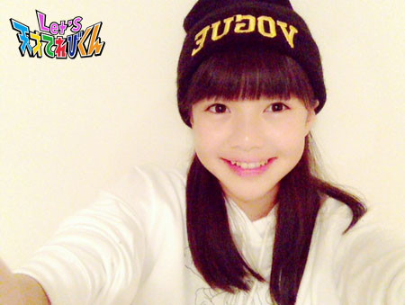
投稿者:原田明莉 | 投稿時間:18時45分 | カテゴリ：てれび戦士 | 固定リンク
私の学校でのお楽しみ！［小西憧弥］
こんにちは (^-^)/
憧弥です！
さっそく、本題 「 私の学校でのお楽しみ！ 」です。
雨の日は、教室でノートに迷路を書いて楽しんでます！
細かいけど、ちゃんとゴールまで行けるように書くのが楽しいんです。
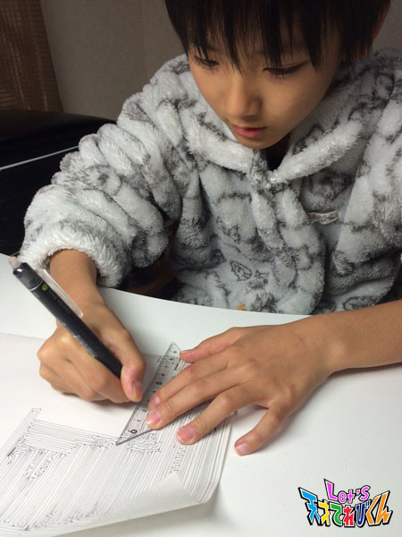
晴れの日は、いくつか楽しみがあります。
１つ目は「 ドッジボール 」、２つ目は「 おにごっこ 」、
３つ目は「 たんぼ 」、４つ目は「 ろくむし 」という遊びです！
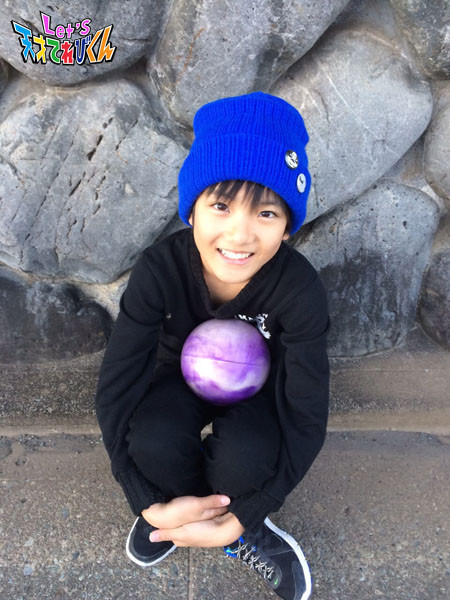
この遊びは、朝休みと２時間目が終わったあとの20分休み、
給食を食べ終わったあとのお昼休みに友達と校庭でやります！
放課後、家に一度帰ってから、
友達と公園に集まってするときもあります。
でも、放課後は普通の「 おにごっこ 」ではなく、
「 ボールおにごっこ 」をすることが多いです。
最近は太陽が沈むのが早いから、
放課後 遊ぶ時間が短くて悲しいです (>_<)
学校は友達と遊ぶのを楽しみに行ってるけど、
ちゃんと勉強もしてるよ～ V(^_^)V
投稿者:小西憧弥 | 投稿時間:18時54分 | カテゴリ：てれび戦士 | 固定リンク
私の学校でのお楽しみ！［齋藤茉日］
こんにちは ( ´ ▽ ` )ﾉ
茉日です**
今回のテーマは
｢ 私の学校でのお楽しみ！ ｣です**
私はとってもシンプルなんですが
ズバリ！
｢ 休み時間に友達とおしゃべりすること。 ｣
です (o^^o)
何を話してるかって言われると、
大したことなさすぎて全く覚えていないんですけど笑
授業のこと。とか
昨日何があった～。とか
｢ やっぱあったかいお茶はおいしいよね～ ｣とか
そんな感じです！
ひたすらべらべら～！とお話して
ひたすらわははは～！と笑って
ほっぺたが筋肉痛になりそうなほど笑います！
すると10分の休み時間が、とっても短く感じます。。。
お話するために学校に行ってる！って言ってもいいほどお話好きです！
（ 勉強しに行かなきゃダメですよね ^^; ） 笑
勉強しながらも息抜きに
たくさん笑うことが大切ですよね！！
明日も笑顔で行きましょう～
てれび戦士の私服の雰囲気が似ている３人も。。。
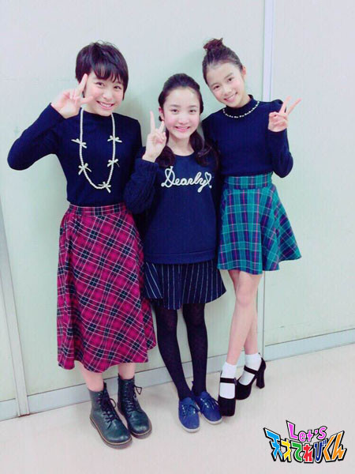
（ 似ている。。。 ）
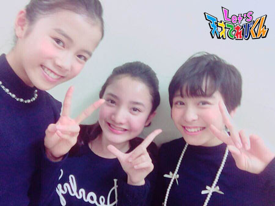
笑顔です～～ ( ´ ▽ ` )ﾉ
それではまたね～
投稿者:齋藤茉日 | 投稿時間:18時45分 | カテゴリ：てれび戦士 | 固定リンク
私の学校でのお楽しみ！［辻村晃佑］
どうもー辻村晃佑でーすー ( ・ε・)
もう今年もあとわずか、
１年間あっという間だったなー ( ´△｀)
いろいろやり残したことがある気がするけど
時は待ってくれないのが残酷ですねー
・・・なんて、らしくもないことを言ったりしてヽ(￣▽￣)ノ
まぁこれから「 クリスマス 」「 冬休み 」「 大晦日 」「 元旦 」という行事があるから
全部たのしむぞー (゜▽゜*)
来年も楽しい年になるといいなー
さて本題です！
今回は「 私の学校でのお楽しみ！ 」かー
学校の楽しみは、ずばり休み時間です。
休み時間とは、言い替えれば学生のオアシスの時間なんですよー
この気持ちは学生にしかわからないことです (´・ω・`)
そしてぼくの学校の休み時間の過ごし方は、友達といろいろと遊ぶことです ( ´_ゝ`)
例えば鬼ごっこ的な何かとかをしたり、
雑談したり、ときには戦います ( ・ε・)
あ、もちろん遊びでね！
いまだに勝ったことがないけど、卒業までには勝ちたいですね （笑）
ぼくは再来年 高校生になっていると思うけど、
高校では部活とかに入って、今よりももっと学校生活を楽しみたいですね！
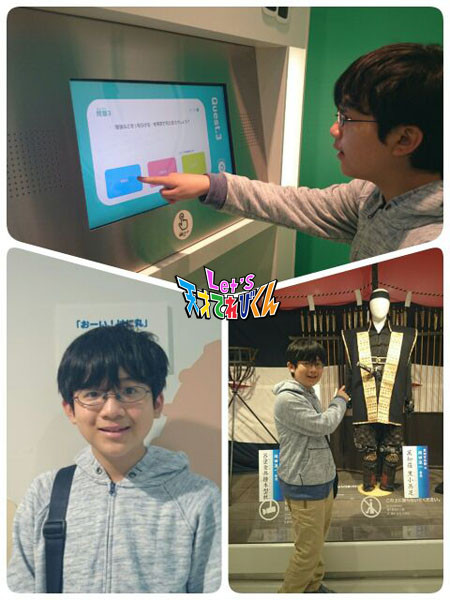
NHKスタジオパークに遊びに行きました！
楽しかったなぁ～
投稿者:辻村晃佑 | 投稿時間:18時45分 | カテゴリ：てれび戦士 | 固定リンク
私の学校でのお楽しみ！［飯島緋梨］
こんにちは (*´∇｀*)
飯島緋梨です！
最近グッっと寒くなって
マフラーに手袋が欠かせない季節になってきましたね (´×ω×`)
風邪をひかないように！！
手洗いうがいは絶対しましょう！！
って言われてる緋梨ですが・・・ (・・)
実はたまに忘れちゃう～
《 あのとき手洗いうがいをちゃんとしておけばよかった～ 》
とならないように気をつけなくっちゃ！
さてさて！
今回のお題は、
「 私の学校でのお楽しみ！ ｣
学校での楽しみは
お友だちとおしゃべりしたり、校庭で遊んだり！
色々あるけど・・・
やっぱり最近の学校でのはやりといえば、
【 トランプ 】です！
緋梨のクラスでは休み時間中、
くもりの日や雨の日、トランプを使って遊んで良い、という決まりがあります！
みんなで休み時間にチョットだけでもトランプをすると
次の授業まで、なんでか分からないけど本当に楽しくなってくるんです！！
でもでも楽しすぎて
最初はちゃんと言われた通り
くもりの日や雨の日に遊んでいたんですが・・・
最近は晴れの日でも遊んでしまいます！
先生に怒られちゃうかも・・・ (／≧ω＼)
皆さんは学校で何して遊んでいますか？
もうすぐクリスマスだし
クリスマスパーティに
トランプを使ったマジックとか
考えたら楽しいかも。
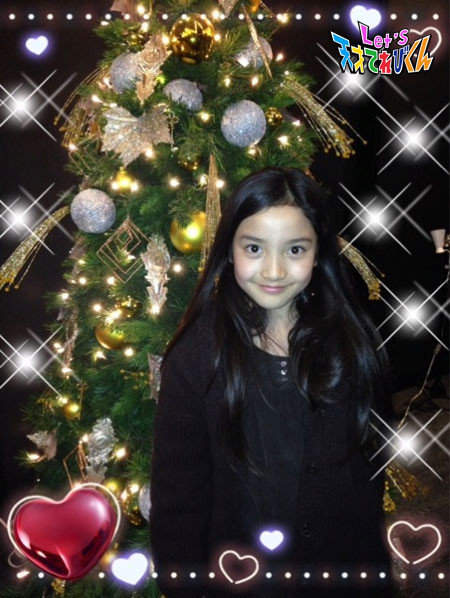
投稿者:飯島緋梨 | 投稿時間:18時45分 | カテゴリ：てれび戦士 | 固定リンク
私の学校でのお楽しみ！［林武尊］
こんにちは、林武尊です！！
この前、長崎の週にも出てきた、変面（ へんめん ）という中国の伝統芸能を見に行きました！！
それがすごいんです！！
顔に着けているお面が、一瞬で他の面に変わるんです ΣΣ(゜Д゜;)
顔を隠しているときもあったり、隠してないときもあったり。
でもタネが全然 分かりませんでした！！
今考えてみても不思議です。
では本題へ！
今回は学校ではやっていることです！！
よく体育が終わったあと、着替えているときに
岡山の週にも出てきたB'zさんの「 ultra soul （ ウルトラソウル ） 」を１人が歌い、
「 そして輝くウルトラソウル♪ 」と言ったあと、
男子の皆で「 ヘイッ！！ 」って 言うこと！
それから、休み時間に【 だるまさんが転んだ 】で遊ぶことや
ぶつかったりしたときに「 あっ痛い 」って言うと
「 誰に会いたいの？ 」とちょっとふざけて聞くんです！！
うちの学校では、こういったことがどんどんあふれでてきます！！ (^^）
もっとうちのクラスが盛り上がっていったらなーと思います (^o^ゞ
今日の写真はこれー！
だーれだ？
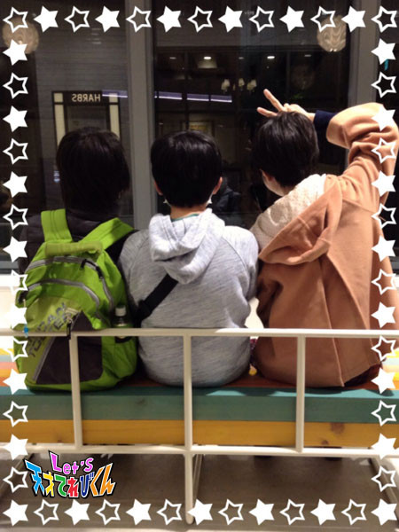
武尊、ツージー、月香でした！
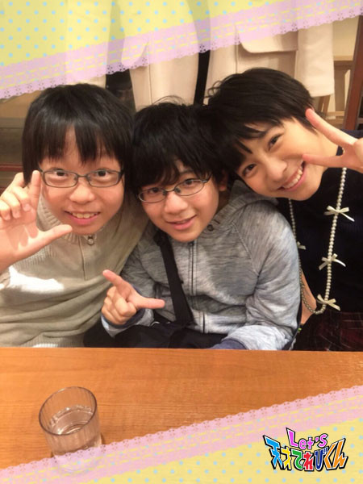
ではまた (o＾・＾o)
投稿者:林武尊 | 投稿時間:18時45分 | カテゴリ：てれび戦士 | 固定リンク
挿入歌「進め！てれび戦士」の歌詞［ITAISEN職員］
我らが国立異次元獣対策センター（ 略してITAISEN ）の文芸部が作詞し、
てれび戦士たちが歌う「 進め！てれび戦士 」という挿入歌（ そうにゅうか ）が、
秋から新しく登場した。
茶の間戦士諸君にも歌ってみてほしいので、
特別に一番の歌詞を公開しよう。
まだ放送では出てきていない部分があるかもしれないぞ。
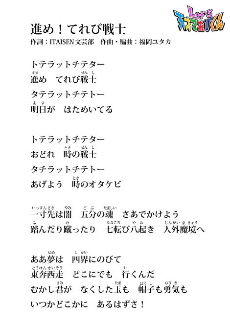
投稿者:ITAISEN職員 | 投稿時間:18時55分 | カテゴリ：その他 | 固定リンク
私の学校でのお楽しみ！［杉本瑛］
みなさん、ボア タルデ（ ポルトガル語でこんにちは ）！
杉本瑛です♪
この前、飯島ちゃんと写真を撮りました～
飯島ちゃん、写真撮るの上手だから、
２人ともふだんより大人っぽく写っててすごくうれしい！！
姉妹みたいだな～ （＾Ｏ＾）
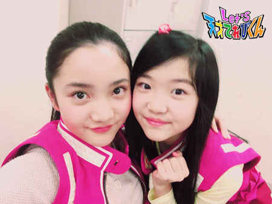
さて、今回のお題は、「 私の学校でのお楽しみ！ 」です。
瑛の学校での楽しみは、読書です☆
休み時間になったら、いつも本を引っ張りだして読んでます （笑）
好きな本の種類は、探偵ものや冒険ものです。
今はシャーロック・ホームズ・シリーズがきてます （＾∇＾）
イギリス・ロンドンのベイカー街にシャーロック・ホームズ博物館があって、
そこでパイプくわえて、マント着て、
帽子かぶって記念撮影できるらしいんです。
あー、ロンドン行きたいなぁ （＾ω＾）
ちなみに、瑛は本が好きすぎて、
委員会活動は図書委員に、クラブは読書クラブにしちゃいました (^_－)－☆
そのくらい読書が好きなの （≧∇≦）
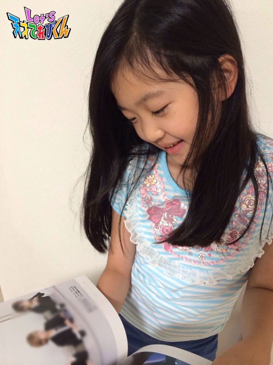
投稿者:杉本瑛 | 投稿時間:18時54分 | カテゴリ：てれび戦士 | 固定リンク
私の学校でのお楽しみ！［小澤竜心］
こんにちは！竜心です。
もう、雪の季節ですね～。
この冬も、雪遊びができるかな？
雪合戦や、かまくら作り・・・
また、できるといいな～ (*≧∀≦*)
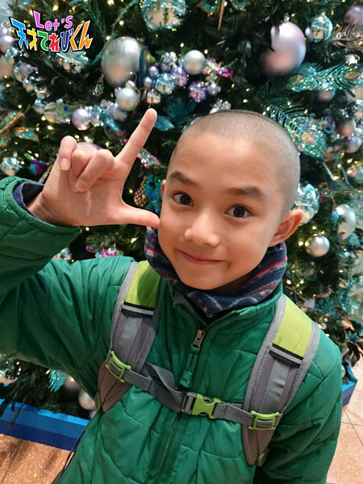
今、ぼくの学校でのお楽しみは、
【 おにごっこ 】と、【 歴史まんが 】です！
【 おにごっこ 】は、５年生のみんなで、
20分休みや、昼休みにします。
よくするのは、『 ふやしおに 』 と 『 線おに 』です♪
★ ふやしおに ★
鬼にタッチされた人が鬼になって、
鬼がどんどん増えていきます==ヘ(゜ο°;)ノ
逃げる人がいなくなるまで、続きます。
はさみうちされると、逃げるのが難しいので、
まわりをよく見て動かなくてはいけません！！
★ 線おに ★
体育館や屋上で、線の上だけでやります。
高い所に乗ってもOK！
鬼にタッチされたり、線や高い所から落ちると、
鬼と交代になります。
これは、バランス感覚が大切なおにごっこです！
こうして考えてみると・・・
おにごっこは遊びなのに、
いろいろ勉強になっているなぁ～と思いました。
【 歴史まんが 】は、クラスではやっています！
朝読書の時間や、雨の日の休み時間に読みます。
給食の時間になると、
歴史のクイズを出しあって、盛り上がります♪
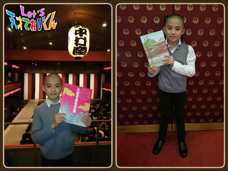
５年生では、勉強のことがはやっています。
歴史は、歌舞伎のお話が出てくるので、
おぼえるのが楽しいです ((o(^∇^)o))
投稿者:小澤竜心 | 投稿時間:18時45分 | カテゴリ：てれび戦士 | 固定リンク
私の学校でのお楽しみ！［赤崎月香］
こんにちは ヽ(^▽^@)ノ
赤崎月香です。
やっと期末テストが終わったーーー！！！！！
結構頑張ったので、良い結果が期待できます！！！！！
ゴロゴロし放題だーーー！！！！！
－－－達成感♪ ＆ 解放感♪－－－
( ￣￣￣￣ ▽ ￣￣￣￣ )ぽわわわわ～～～ん
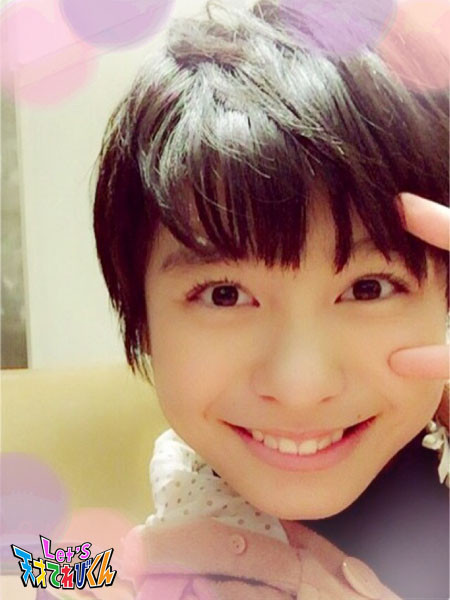
☆。・:*:・°★,。・:*:・°☆
『 私の学校でのお楽しみ！ 』
私は、学校が大好きです♪
幼稚園も小学校も大好きでした。(*^-^)
中学校は、グラウンドに遊具がないので
お昼休みに外で遊ぶことはしないから、
ちょっとつまんないなぁ・・・ (-ω-;)
最近は、お友達と心理テストをして遊んでいます♪
「 あーー！！ 当たってるーー！！ 」っていうのもあるし、
「 うっそだーーー！！！ 」っていうのもあります。
自分やお友達の意外な一面が分かったりして、
とってもおもしろいです o(*^▽^*)o
学校でお友達とおしゃべりするのが
楽しくてしょうがない！！！ ((((((〃￣З￣)ノ♪
給食も楽しみ♪
私の好きな給食のメニューは、
あげパンとシチューです ヾ(〃^∇^)ノ
あげパンの日は、朝からテンション上がります！！
☆。・:*:・°★,。・:*:・°☆
ちなみに、私の学校での失敗あるあるは・・・
黒板にラクガキをして、
制服のそでにチョークの粉がついちゃって、
はたこうとしたら、余計にそでが汚れちゃったり (-_-;)
もう中学２年生なのに、
【 数学 】を【 算数 】と言っちゃったり (^^;)
失敗してもニヤニヤしますよ (=￣∇￣=)ニヤ
☆。・:*:・°★,。・:*:・°☆
もうすぐクリスマスですね ☆彡
わくわくします♪
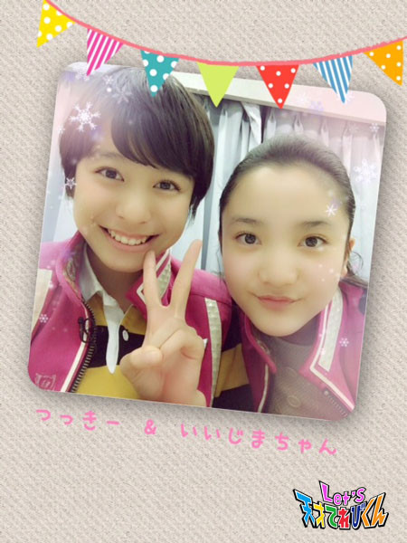
またね～ ヾ(*'-'*)
投稿者:赤崎月香 | 投稿時間:18時45分 | カテゴリ：てれび戦士 | 固定リンク
私の学校でのお楽しみ！［笹原尚季］
こんにちは！笹原です。
ほかほかパーカーが幸せな季節になりました。
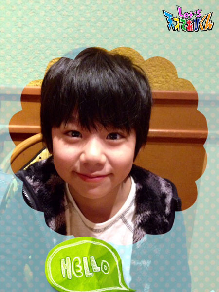
新幹線に乗る時はひざにかけたり（ 見えないですが (~_~;) ）
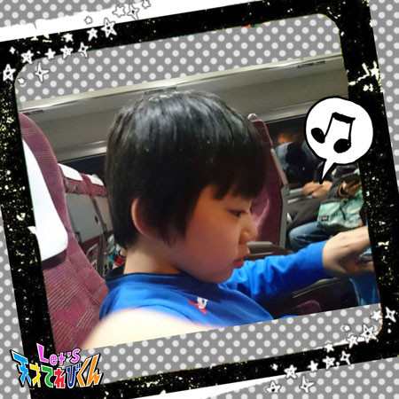
こっちでも着てますね！ 毎日手放せません。
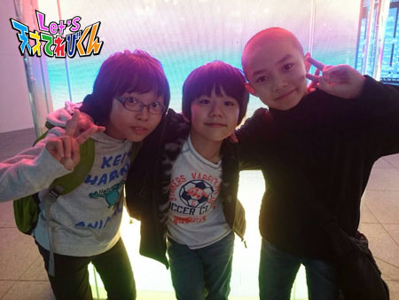
ちょっと前までは、こんな服でも寒くなかったのに・・・？
あっという間に冬になってしまいました (>_<)
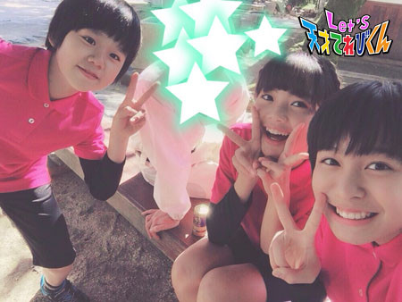
今回のテーマは、「 私の学校でのお楽しみ！ 」です。
僕の楽しみは、休み時間にするバスケです。
この前、学年でバスケットボール大会がありました。
それからみんな、バスケにはまっていって、
今ではみんなで休み時間に毎回バスケをして楽しんでいます！
もう１つはやっぱり、給食の時間です♪
揚げパンや、カレーが出たときは、すっっごくうれしいです！
先生もカレーが大好きで、みんなでたくさんおかわりして、すぐになくなってしまいます。
みんなで給食を食べるときはすごく楽しいです！
他にもたくさんあります。
体育の時間とか、家庭科の時間とか、すごく楽しいです！
だから週末は、月曜日がとっても待ち遠しいー！！
学校でのお楽しみ、というより、学校が毎日ほんっっとに楽しみです ☆
投稿者:笹原尚季 | 投稿時間:19時00分 | カテゴリ：てれび戦士 | 固定リンク
私の学校でのお楽しみ！［桐畑カレン］
こんにちは。
カレンです (*^^*)
この前、焼きいもをおともに
いちょう並木をお散歩しながら、ある所に行ってきました。
そこは・・・
☆ アイススケート場 ☆
行く前はうきうきしていたのに、いざリンクに立ってみると、こーわーいー ((T_T))
こわくてこわくて、リンクの手すりから手がはなせなくなりました (>_<")
でも練習して、１人で立てるようになりました (*^▽^*)
そして、手をつないでもらったらすべれるようになりました♪
さらに、笑顔でピースできるようになりました♪
目指せ「 氷の上のよ・う・せ・い 」( ^-^)ノ∠※。.:*:・'°☆
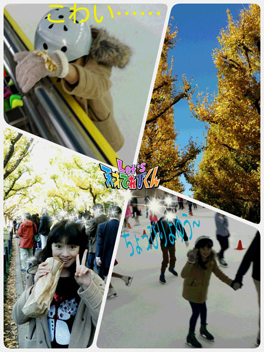
はい！今回のお題は「 私の学校でのお楽しみ！ 」ですね。
私は、学校に行くことが毎日とても楽しみです (^o^)
それはお友達に会えるから♪
休み時間にみんなでするのが
「 おにごっこ 」です。
私はかくれながら逃げるのが得意です (*^^*)
おにになると困ります (/_;)
おにごっこは「 氷おに 」や
「 ぐるぐる回るおにごっこ 」など、いろんな種類があります (^^)
何人かのお友達としているのが、
「 BA・BI・GO 」～バビ語～
です。
バビ語とは・・・
母音にあわせて、「 ばびぶべぼ 」をくっつけるんです。
例えば、「 ありがとう 」をバビ語で言うと、
「 あばりびがばとぼうぶ 」となります。
これをちょっぴり早口めで言うんです。
そうすると何て言っているのか周りの人には分からないみたいで、
「 金星人 」とよばれています (^w^)
みなさんの学校でのお楽しみは何ですか～？
いろいろと知って、とり入れてみたいな♪
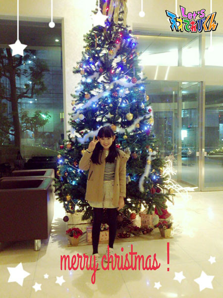
投稿者:桐畑カレン | 投稿時間:18時45分 | カテゴリ：てれび戦士 | 固定リンク
私の学校でのお楽しみ！［瀧澤翼］
こんにちは～！！
瀧澤翼です！
この前 立ち寄ったショッピングモールに
きれいなクリスマスツリーがありました！
あまりにもきれいなのでパシャリ (^ ^)
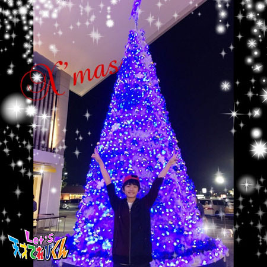
もうクリスマスかぁ～
僕の所にもサンタさんは来るのかなぁ？
さぁ今回のテーマは「 私の学校でのお楽しみ！ 」ですね。
僕が通っている学校は
休み時間に外へ出て遊んではいけないルールとなっていますが、
毎週水曜日だけ体育館で遊べるんです！
遊びといっても中学生なので
小学校のときにやっていた鬼ごっこなどではなく、
なぜかバスケットボールをやってる人が多いんです。
僕はバスケが得意じゃないんですが、おもしろくて最近ハマっています。
バスケをしていて
シュートが決まったときの達成感と、チームの一体感を感じるところが楽しいです！
今は休み時間に友達とバスケをしている時間が、
学校でいちばん楽しくて気持ちいい瞬間です！！
今回はここまで！
次回もお楽しみに～！
Let's basketball！
投稿者:瀧澤翼 | 投稿時間:18時54分 | カテゴリ：てれび戦士 | 固定リンク
季節を感じる瞬間［飯島緋梨］
こんにちは！
飯島緋梨です ^o^
あっという間に12月！！
早いですね～
寒いですね～
冬ですね～
さてさて。
今回のお題は「 季節を感じる瞬間 」「 好きな季節 」！
私の好きな季節は・・・【 冬 】
寒いけど、雪が降ったら遊べるし
イルミネーションもきれいだし
クリスマスもあるし楽しみ (*^◯^*)
あと冬はお鍋がおいしい♪
緋梨は、みそ味のよせ鍋で
カキとかタラとか入ってる鍋が好き。
野菜もいっぱい食べられるし
食べ終わったあとにご飯を入れて雑炊にしたり
うすいお餅をしゃぶしゃぶしたりするんです！
これがまたおいしいの （＾∇＾）
あったまるし最高！
服もかわいくてモコモコの服がたっくさん！
だから冬が大好きです ( ^ω^ )
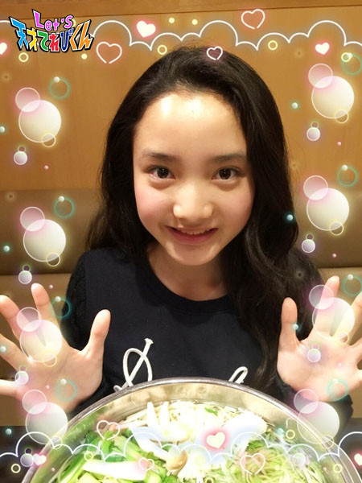
みなさんの好きな季節はなんですか？？
Let's 冬！
投稿者:飯島緋梨 | 投稿時間:18時45分 | カテゴリ：てれび戦士 | 固定リンク
季節を感じる瞬間［林武尊］
こんにちは、林武尊です。
この前、学校対抗のドッジボール大会がありました！！
僕のチームは・・・
準優勝でした (o＾・＾o)
去年も準優勝だったから、２年連続・・・
今年は優勝したかったけど、また同じ学校の別のチームに負けちゃった・・
しかも、僕の学校は低学年も中学年も優勝したのです！みんな強い！
では本題へ。
今回は「 季節を感じる瞬間 」です。
僕が季節を感じる瞬間は・・・・・
春
○ くしゃみが止まらなくなったとき
○ 春一番が吹いたとき
夏
○ セミの声が聞こえたとき
○ 流しそうめんを食べるとき
秋
○ 晩ご飯にサンマが出てきたとき
○ ちょっと寒くて長袖の服を着たとき
○ 食べものがおいしいと感じるとき
冬
○ 町でクリスマスツリーを見かけたとき
○ 雪が降ったとき
○ おばあちゃんの家で紅白歌合戦をみるとき
です。
他にもたくさんあるけど、
日本は春夏秋冬、いろんな季節が楽しめて大好きでーす！
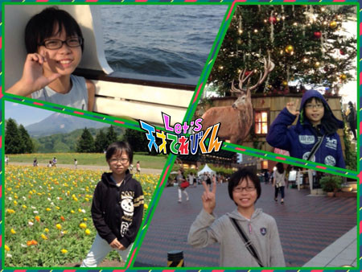
投稿者:林武尊 | 投稿時間:18時45分 | カテゴリ：てれび戦士 | 固定リンク
季節を感じる瞬間［原田明莉］
★ Hello ★
明莉です！
もう12月ですねーーー
早すぎる！ 早すぎる！
まだ11月入ってないくらいの気分で、
この間、ノートをとるときに10月と書いてしまいましたよ！！
それでは本題に入りたいと思います！
今回のテーマは「 季節を感じる瞬間 」
です！
そーですねー。。。
もう、季節を感じるどころか、
感じる前に季節が次々とかわっていっちゃいます！
それでも、感じる瞬間はしっかりありますよ！
私が季節を感じる瞬間とは
食べものの違いです！
例えばお菓子とかだと、冬はチョコものが多く売っていたり！
夏はよく氷を使ってご飯を食べます！
特に、私だと、朝によく食べるお茶漬けが特徴的です！
以前の記事で冷やし茶漬けを紹介したんですが、
今はもちろん温かいお茶漬けをすすります♪
学校行く前の朝、体をポカポカにして行きます！
で、また暑くなってきたら氷をいれる！
という感じで、私が季節を感じる瞬間は食べものの違いです！
もう冬ですねー
冬の楽しみもたくさんですが、体調も崩しやすい時期なので、
みなさんも気をつけてくださいね！
みなさんの季節を感じる瞬間とは、どんなときですかー？
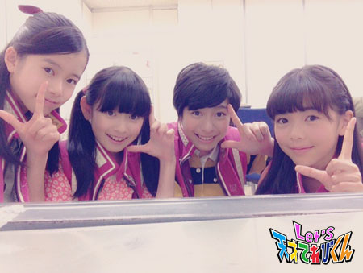
投稿者:原田明莉 | 投稿時間:18時45分 | カテゴリ：てれび戦士 | 固定リンク
季節を感じる瞬間［笹原尚季］
こんにちは～！
暑くても寒くてもいつも元気な、笹原です。(^O^)
今回のお題は「 季節を感じる瞬間 」です。
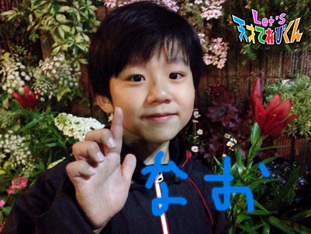
僕が季節を感じるときは、空がすぐに暗くなったり、
学校の下校の時間が早くなったりすることです。
他にも、買い物に行ったらさんまが安くうっていたり、
いろいろなところにどんぐりが落ちていたりすることです（ 神社とか ）。
そして今回は、僕の好きな季節についても話したいと思います。
僕の好きな季節は夏です。
夏は比較的 下校の時間も遅いし、
天気がいいので外でたくさん遊べるからです。
またアイスを食べたりいろんなおいしいものがあるからです。
何よりお誕生日がいちばん大好き！
夏に生まれだから、やっぱり夏がいちばん好きです(^^)
早く夏にならないかな～？？
夏は終わっちゃったけど、やっぱり夏が待ち遠しいです♪♪
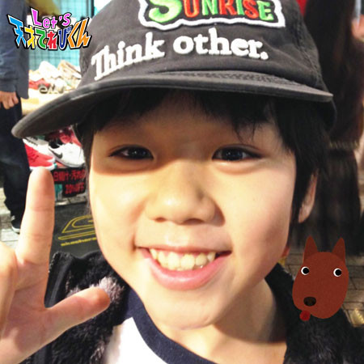
投稿者:笹原尚季 | 投稿時間:18時45分 | カテゴリ：てれび戦士 | 固定リンク
季節を感じる瞬間［桐畑カレン］
こんにちは。
カレンです (*^^*)
最近夕方になるとお家の近くに、
「 いしや～きいも～♪ 」
と、石焼きいもやさんが来るんです。
あまーい香りでおいしそう (´∇｀)
寒くなる季節がやってきたな～。
今回のお題は「 季節を感じる瞬間 」です。
春・夏・秋・冬、それぞれに
「 〇〇がきたな～ 」
って思うときがあるけど、
今日は冬についてお話したいと思います。
私、寒いのは苦手だけど冬は好きなんです (о´∀`о)
それは、
☆ 朝モコモコのおふとんの中で、まったりする幸せな時間があるから
☆ はーっとはく息が白くなって、
「 あっ、息してる 」って分かるから（ ふだんは息って見えないから ）
☆ お店にならぶチョコレートの種類が増えて、
「 どれ買おうかな～ 」ってなやんでうれしくなるから
（ なやんでるのにうれしいっておもしろい ）
こんなことを思っているときなんかに、
冬を感じているんだろうな (*^ー^)ノ♪
四季を感じることができる日本はやっぱりいいですね (*^▽^*)
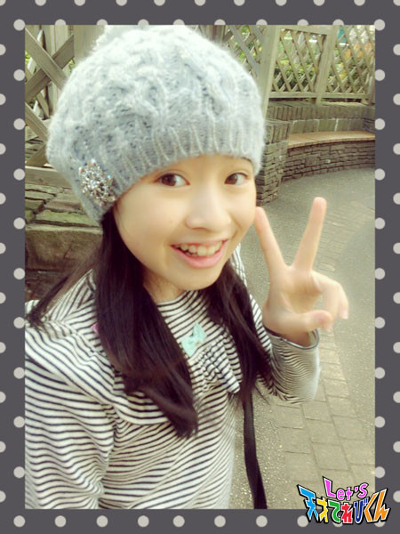
投稿者:桐畑カレン | 投稿時間:18時54分 | カテゴリ：てれび戦士 | 固定リンク
季節を感じる瞬間［小西憧弥］
こんにちは！憧弥です。
朝、布団から出たくない季節になってきました。
お母さんは何度も何度も起こしてくれてるみたいだけど、
憧弥は起きてトイレに行ってご飯を食べてる夢を見ながら、寝てるみたいです。
起きてから25分後には家を出られるので、ギリギリまで寝ちゃうんだな～。
では、本題「 季節を感じる瞬間 」です。
まずは、春！
家族全員花粉症なので、誰か１人が連続でくしゃみをし始めたら春を感じます。
次は、夏！
雨で外で遊べない日が続いて、晴れになったとき、
夏だー！って感じます。
あと、クーラーのニオイと、日焼け止めのニオイでも夏を感じるなあ。
次は、秋！
外に出て、どこかのキンモクセイがにおう瞬間があるの！
秋を感じるのは絶対その瞬間！
次は、冬！
ファンヒーターのニオイとキムチ鍋が出てきたら、
冬だな～って感じます。
憧弥は秋がいちばんすきかなぁ～。
サツマイモと栗がいっぱい食べられるから (^-^)/
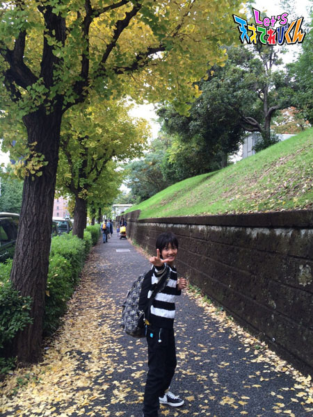
投稿者:小西憧弥 | 投稿時間:18時45分 | カテゴリ：てれび戦士 | 固定リンク
季節を感じる瞬間［杉本瑛］
皆さん、フーテミッターフ（ オランダ語でこんにちは ）！
杉本瑛です！
今回のお題は「 季節を感じる瞬間 」です☆
瑛が季節を感じる瞬間は、その季節の食べものを食べるときです！
では枕草子（ まくらのそうし ）風に。
（ 清少納言（ せいしょうなごん） さん、まねしてごめんなさい ）
春はイチゴ。ようよう赤くなりゆく甘い際、少しかじって (*^^*)
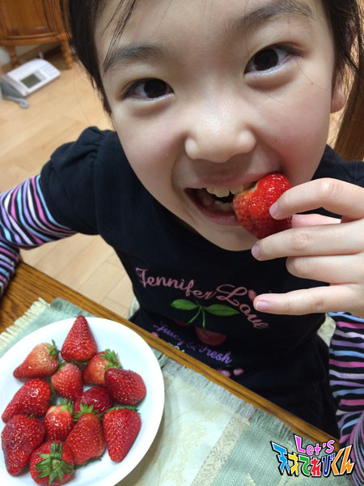
夏はアイス。真昼の頃はさらなり。
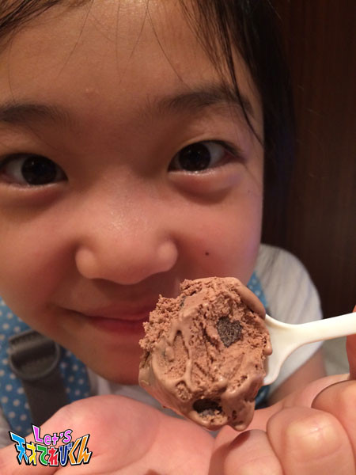
秋はぶどう。三つ四つ、二つ三つなど食べ急ぐさへあはれなり。
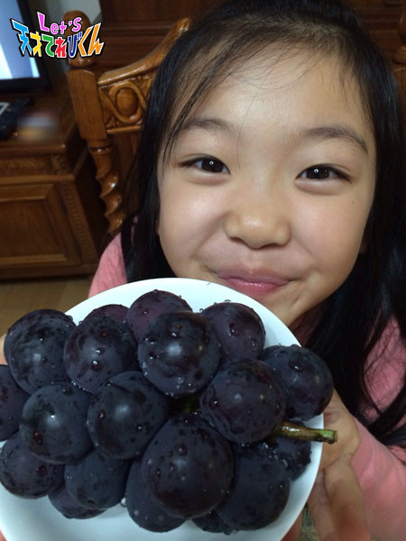
冬はお鍋。カニの煮えたるはいふべきにもあらず！
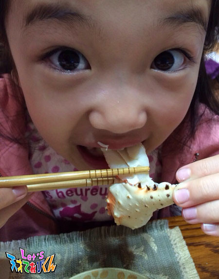
旬の食べものを食べると、季節の特殊なパワーが加わって、
ものすごく元気になれる気がします！
古くからの知恵ですが、本当にそうだなぁと体感してます。
特に、日本のご飯は食べても目で見てもおいしいので、
身体だけではなくてハートにもエネルギーがチャージされます！
みんなで季節の食べものを食べて、元気いっぱいになりましょう（＾◇＾）
投稿者:杉本瑛 | 投稿時間:18時45分 | カテゴリ：てれび戦士 | 固定リンク
ページの一番上へ▲